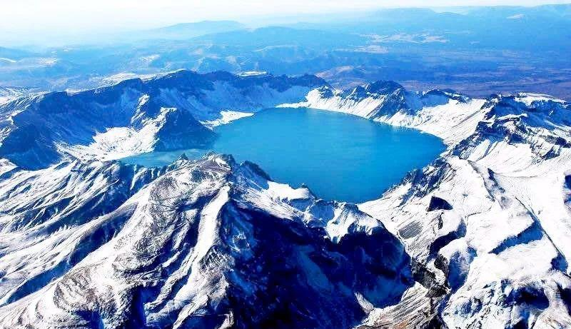

China travel

The Great Wall is ancient China's most magnificent military defense project, stretching over 20,000 kilometers across 15 provinces and autonomous regions, including Hebei, Beijing, Shanxi, Shaanxi, and Gansu. Construction began in the 7th century BC during the Spring and Autumn Period and the Warring States Period. After the unification of the six kingdoms, Emperor Qin Shihuang first connected sections of the wall into a coherent whole. The Ming Dynasty section is the most well-preserved and remains one of China's most famous tourist attractions. The Great Wall is not only a fortification but also a symbol of ancient Chinese wisdom and perseverance. It is considered one of the "Seven Wonders of the World" and was designated a World Cultural Heritage in 1987.


The Terracotta Army of Qin Shi Huang, located in Lintong District, Xi'an, Shaanxi Province, is a key component of the Qin Shi Huang Mausoleum and is known as the "Eighth Wonder of the World." Their accidental discovery in 1974 by villagers digging a well astonished both China and the world. In 1987, they were designated a UNESCO World Heritage Site. Historical Value Background: The Terracotta Army was built around 246 BC as a burial pit for the Qin Shi Huang Mausoleum, intended to protect the underground empire after the death of the "Greatest Emperor of All Time." Scale: Three excavated terracotta army pits have been discovered, covering an area exceeding 20,000 square meters. An estimated 8,000 terracotta warriors, hundreds of chariots, and thousands of horses are found. Artistic Level: The Terracotta Army is a masterpiece of realistic sculpture, each figurine standing approximately 1.8 to 2 meters tall, each with a unique expression. The hairstyles, clothing, armor, and weapons are remarkably lifelike, showcasing the majesty of the Qin .

Changbai Mountain, located in southeastern Jilin Province, China, on the China-North Korea border, is a renowned natural scenic area and a national 5A-level tourist attraction. It is the highest mountain range in Northeast China, with its main peak reaching 2,750 meters above sea level. Its climate is highly variable, and its scenery changes with each season. Known for its majestic volcanic landscapes, unique alpine lakes, and rich flora and fauna, Changbai Mountain is known as the "First Mountain of the North."